merlin overview
merlin is a simple, graphical and user-oriented solution for the reconstruction of genome-scale metabolic models. merlin will guide you along the model reconstruction, providing several tools that help to improve and curate the model throughout the whole process.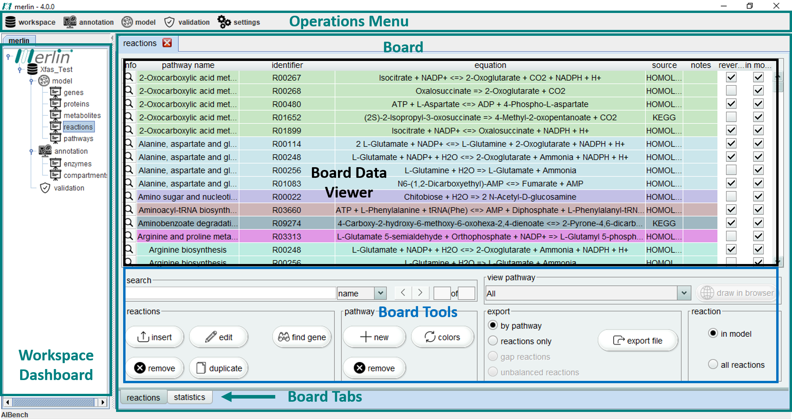
×

merlin main window is divided in several sections. Firstly, the "Operations Menu" includes workspace configuration and all the major model reconstruction related operations. The ‘Workspace Dashboard’ contains the opened workspaces, as well as the composing dashboards "model", "annotation" and "validation". Upon "opening" a selected dashboard, several "boards" become available.
Finally, the major part of merlin window is filled by selecting the intended board, in the workspace dashboard section. This board is composed by different sections, including:
- Board Data Viewer - Display of useful data of the selected board;
- Board Tools - operations related to the current displayed data;
- Board Tabs - These can be used to cycle between the different tabs of a board.
Before starting
Recommendations
Before you start we suggest the following optional procedures to enhance the reconstruction of Genome-Scale Metabolic Models using merlin:- BLAST+ - Consider installing NCBI's standalone BLAST+ tool. This tool can be used for hastening the GPRs procedure. Follow the instructions: Windows; Unix; Others;
- Memory - Consider increasing the maximum heap memory size (RAM) for large genome sequences or multiple reconstructions. See Increase maximum heap memory size for more details.
Open merlin
Unzip the merlin folder that you have just downloaded and double-click on the merlin.bat file.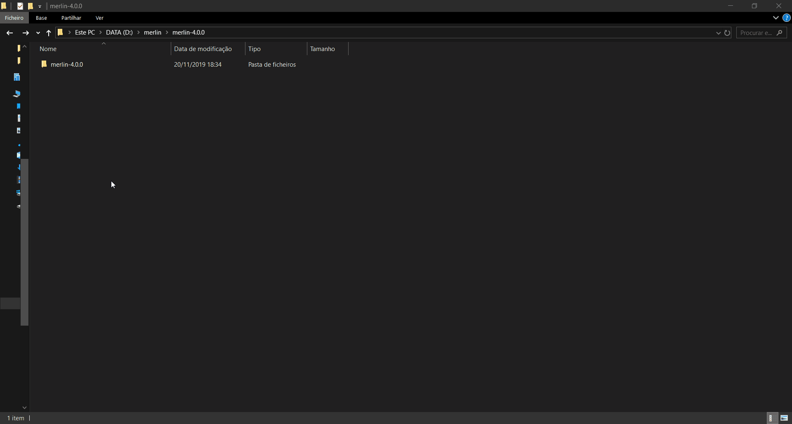
×

Database settings
If the user wants to use the default database settings of merlin, the following instructions can be skipped. Otherwise, to select the database type, the user must open the section “settings” in the menu and then select “database”. Here, the database type is the first option, where the option “H2” corresponds to a local database and is already selected by default. Alternatively, merlin also supports local or remote MySQL databases. The following fields are: username, password, host, and port. When all parameters are set, merlin should be able to successfully establish a connection with the database server of the user.
×

Workspace
Create a workspace
To create a new workspace, one has to access the “workspace” section and choose the “open” option. If a given user is creating a workspace for the first time, the interface will not provide a list of available workspaces, instead it will prompt users to automatically create a workspace. To create a workspace at any given time, one must choose the “create” option and enter the new workspace name (duplicate names are not possible and will prompt a warning). After creating a workspace it is mandatory to enter the NCBI Taxonomy Identifier of the organism in study. It is possible to automatically download all NCBI files associated with a given assembly record, as selected by the user, by choosing the “search” option. The final step towards creating a new workspace consists in entering the user email. This information will be stored only in the local machine of the user, and it is mandatory to access the APIs of certain frameworks, such as UniProt and BLAST.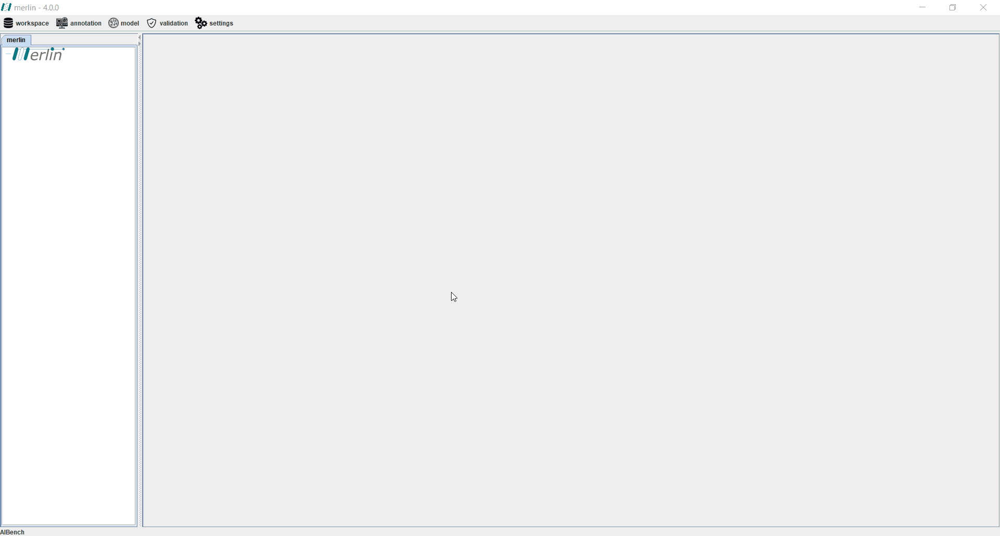
×

Load a workspace
After creating a workspace, the loading process is identical. One must access the “workspace” section and choose the “open” option. Afterwards it is only necessary to choose the desired workspace from a list of available options. The taxonomy identifier and personal email will be already filled.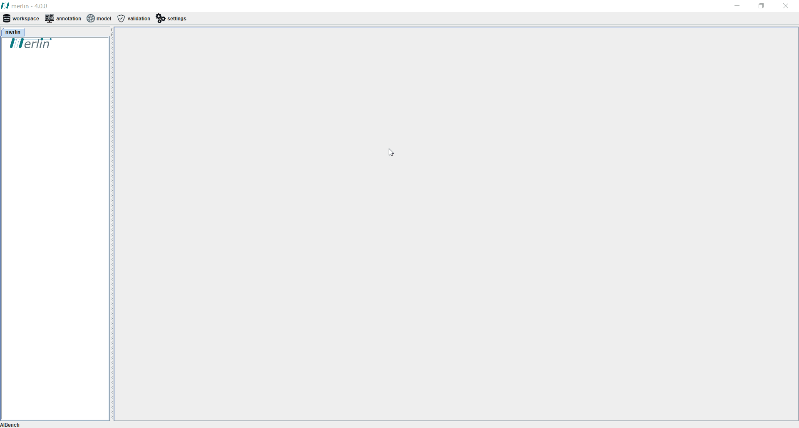
×

Import a workspace
merlin provides an option to import pre-existing workspaces, regardless of origin. To import a workspace one must access the “workspace” section and hover over the “import” option, followed by choosing the “workspace” option. A new panel will pop up where users can browse their local machine to select the “.mer” merlin workspace backup. It is possible to redefine a new name for the imported workspace. If the user decides to not provide a new name, the imported workspace will inherit its original name.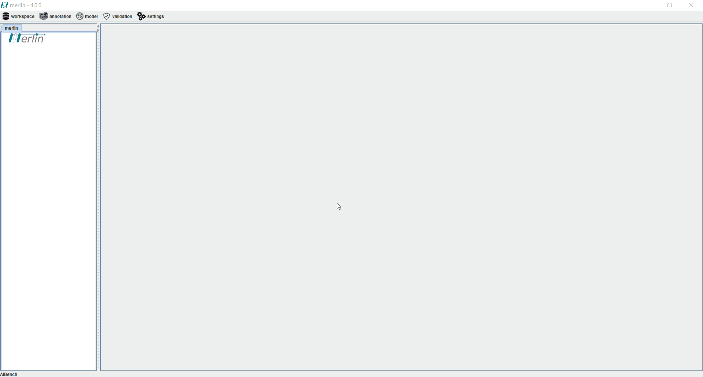
×

Export a workspace
merlin provides an option to export a backup of a given workspace, which can be used for personal storage or sharing with other users. To export a workspace one must access the “workspace” section, hover over the “export” option and choose “workspace”. A new panel will pop up where users can choose which workspace to export, and where to export it in the local machine. Workspaces are exported in “.mer” format and are automatically named based on the workspace name and time/date of export.
×

Clean a workspace
“Cleaning” a workspace consists in deleting specific parts of the database associated with the workspace, as user-defined. To clean a workspace one must access the “workspace” section and choose the “clean” option. A panel will pop up asking users to choose the target workspace. Additionally, users can choose to clean the whole database of the workspace, model data only, or annotation-data only (including the different annotation stages). Moreover, it is possible to choose to maintain/delete gene sequences and associated data, as well as automatically reloading KEGG’s metabolic data (to the selected workspace after cleaning).
×

Delete a workspace
Deleting a workspace is an irrevocable operation which will also delete the associated database. To delete a workspace one must access the “workspace” section and choose the “delete” option. A panel will pop up asking for the target workspace to delete.
×

Clone a workspace
merlin easily allows users to make a copy of available workspaces efficiently without requiring additional export and import operations. To clone a workspace one must access the “workspace” section and click the “clone workspace” section. A new panel will pop up asking users to select the workspace to clone and the name of the generated copy. If a user enters a name for a copy which matches an already existing workspace, the operation will not continue. If the user does intend to replace an existing workspace with a copy of another workspace, this restriction can be bypassed by choosing the “force database creation” option.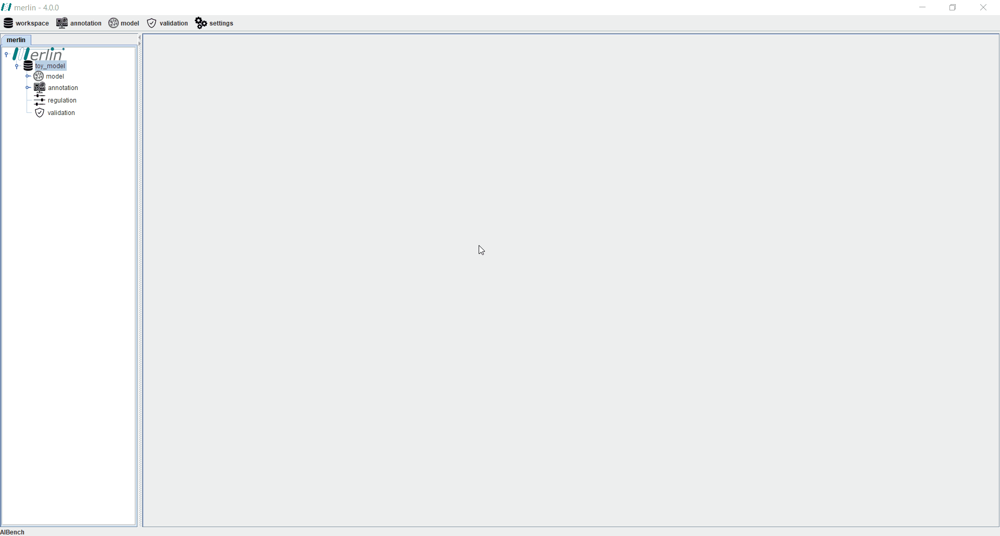
×

Compatibility (import workspace from merlin v3 to merlin v4)
To import a workspace from merlin 3 to merlin 4, the user must open the operation located at “workspace” -> “compatibility” -> “import workspace from merlin 3”. A window should open where the user must indicate the name of the workspace to be generated in merlin 4. Note that this name should not already exist in the database, otherwise merlin will throw an error claiming that such workspace already exists. If wanted, the user can force merlin to override this database by selecting the option to “force database creation”. The second field is the name of the workspace to be imported from merlin 3. The last field is to indicate the path to merlin 3 home folder.Genome files
Before starting the genome annotation stage it is necessary to provide the genome data to merlin. The genome of the organism in study is a core basis for all the necessary steps towards reconstructing the associated metabolic model. Genome data may be integrated in merlin with local files or by accessing NCBI remotely. Additionally, it is also possible to automate genome files retrieval upon creating a new workspace. After entering the NCBI Taxonomy Identifier of the organism in study, and clicking the “search” option, it is possible to download the genome data from GenBank or RefSeq (and automatically integrate it in merlin)Import genome files
As aforementioned, it is possible to load genome data to merlin using local files. To perform this operation, one must access the “workspace” section, hover over the “import” option and choose the “genome” option. A new panel will pop up with additional settings. The “search locus tags” option, if activated, triggers an operation to associate each given gene (in the genome files) to a locus tag (if successfully found). merlin is compatible with multiple genome file formats, such as “.faa”, “.fna” and “.gbff”. Upon choosing the genome file to be imported, the final step consists in choosing the desired workspace for the data to be loaded into.
×

Download NCBI genome files
If a user did not automatically download the genome files from NCBI during the creation of a new workspace it is possible to do so at any other moment. To perform this operation, one must access the “workspace” section and choose the “download NCBI files” option. If necessary, one might choose the “search” option to filter a specific assembly record from GenBank or RefSeq.
×

Export genome files
It is possible to export manually or automatically loaded genome files by accessing the “workspace” section, hovering over the “export” option, and choosing the “genome files” option. A new panel will pop up asking the user to choose the genome file to be exported and the output directory.
×

Metabolic data
Obtaining metabolic information is mandatory for a GSM (genome-scale metabolic) model reconstruction. Therefore, merlin contains a simple operation which retrieves information from biological databases. Moreover, this operation will load the metabolic information including compounds, enzymes, reactions and pathways into merlin’s internal database. Currently, merlin only supports metabolic data retrieval from KEGG. However, in the near future, tools to retrieve data from BIGG and ModelSEED databases will be available (see ongoing work for further information). Finally, this operation integrates all the retrieved spontaneous reactions into the model, assembling an initial primitive metabolic network, which will be complemented upon integrating the enzymatic and transporters annotation.
×

Genome functional annotation
merlin allows you to perform the genome functional annotation of the organism of interest. This coincides with the first step towards the reconstruction of your GSM model. There are several options for performing the genome functional annotation with merlin involving homology or domain searches to the genome sequence of the organism of interest. Alternatively, one can also load external genome functional annotations. In the genome functional, we are going to assign metabolic functions, namely the gene products and enzyme commission (EC) numbers, to each coding sequence (CDS) in the genome.Homology search
In merlin, the enzymes functional annotation procedure is leveraged by semi-automatic similarity searches to remote databases, such as UniProtKB or UniProtKB/SwissProt, to find homologous protein sequences. The rationale for annotating a given gene or protein based on the similarity of its sequence with other gene or protein sequences relies on the fact that these may have arisen from a common ancestral lineage. To perform a homology search in merlin, you must have imported the genome files (see Genome Files section).BLAST
The Basic Local Alignment Search Tool (BLAST) is the preferred similarity search tool for performing the enzymes functional annotation in merlin. One can easily use the remote web-service from EBI using the default parameters. Otherwise, you can select the most adequate databases, parameters and thresholds. To do so, you should take a look on your own to the meanings of “expected value” (e-value). Hint: the lower the e-value the highest the similarity score between two sequences. Also, you should inspect the available databases:- UniProtKB - reviewed and unreviewed annotation records from UniProtKB and SwissProt
- UniProtKB/SwissProt - reviewed annotation records from SwissProt
- UniProtKB/TrEMBL - unreviewed annotation records from UniProtKB
Additionally, merlin supports other UniProtKB-based databases. merlin allows you to select the type of the BLAST tool: BLASTp or BLASTx; as well as the sequence type that you are working with. You have the freedom to limit the number of BLAST results to 100 or more. Finally, the substitution matrix can be selected automatically by merlin or defined by you. merlin will perform genome-wide sequence alignments automatically and display the results later into a simplified layout called enzymes board (see Enzymes board). This process may take several hours depending on the web-server availability, internet connection and genome size.

×

Load BLAST report
On the other hand, one can load BLAST reports obtained with the NCBI or EBI web/services. For that, you must provide the path in your computer for the output files returned by these tools and point out their extension, source and type. merlin will parse the contents within each BLAST report and load the results into a simplified layout called enzymes board (see Enzymes board).Domain search
InterProScan
The InterProScan functional annotation is not a mandatory step towards the reconstruction of your genome-scale metabolic model in merlin. In turn, this tool can provide additional information regarding each gene functional annotation. This tool will provide a functional analysis for each protein sequence by classifying them into families and predicting the presence of domains and important sites. InterProScan is a time-consuming tool, thus the user must provide both lower and upper thresholds to limit the number of annotated records. The results of your InterProScan functional annotation can be consulted by clicking the magnifying glass (coloured with a purple background) of each gene entry in the enzymes board (see Enzymes board).Load genome functional annotation
Although it is highly recommended that you perform your own genome functional annotation to assess with high confidence what are the metabolic capabilities present in the genome of the organism of interest, merlin allows you to skip this step. Instead, one can load external genome functional annotations from KEGG or standard format files, such as GFF3 and GenBank.KEGG annotation
To load a genome functional annotation from KEGG, the user must provide the organism identifier (also known as organism code) in KEGG. For example, "eco" for Escherichia coli K-12 MG1655. merlin will load automatically the enzymes functional annotation available in KEGG for the selected organism and integrate it into the model dashboard together with the previously loaded metabolic data (see Model curation section).GFF3
To load a genome functional annotation from an external GFF3 file, the user must provide the path in your computer for the respective file and its source. Additionally, one must tick the EC option checkbox to allow the integration of metabolic capabilities encoded in the genome (identified by the EC numbers). merlin will load the enzymes functional annotation available in the GFF3 file and integrate it into the model dashboard together with the previously loaded metabolic data (see Model curation section).GenBank
The user can load the genome functional annotation available in the GenBank file downloaded before in the Genome files section. Alternatively, to load a genome functional annotation from an external GenBank file, the user must provide the path in your computer for the respective file. merlin will load the enzymes functional annotation available in the GenBank file and integrate it into the model dashboard together with the previously loaded metabolic data (see Model curation section).Pipelines for performing genome functional annotation
merlin allows you to perform the genome functional annotation following two different pipelines. Otherwise, you can perform the genome functional annotation in the enzymes board (see Enzymes board section).Enzymes annotation - Automatic workflow
This tool allows the user to iteratively replicate an annotation workflow. It consists of a GUI containing several slots containing 4 fields to collect parameters from the workflow. Such fields are:- Composed of a drop-down list where the user can select if the step selected will be relative to the species or the genus. If the empty option is selected, the remaining fields become inactive and excluded from the pipeline.
- Composed of a drop-down list containing all species or all genus available in merlin’s internal database, depending on the option selected in the first field. Also the option “any” is available for both options, in order to accept any species or any genus.
- Relative to the E-value threshold. Here, the user can define the maximum threshold above which all annotations must be disregarded.
- Field is a Boolean option where the user can select between matches with UniProt reviewed entries or not.
In case that none of the conditions in each slot of the workflow is fulfilled, the user has available an extra Boolean field that allows the entries to accept the default annotation when no matches are found. The process of assessing the correct annotation, for each gene, starts by searching for the best match among the homologous genes found in the similarity search. With this purpose, an entry that meets the requirements of the first slot is sought among all available homologous genes. If no entries match the requirements, the process is repeated for the next slot, until the entire workflow is iterated. If no entries meet the requirements of any slot, the default annotation can be accepted or rejected, depending on the value of the Boolean option “Accept default annotation if no match is found”.
To each annotation, a confidence level is associated depending on which slot of the workflow the match was found. The confidence level is expressed in sequential order with alphabet letters. The default annotation also has a confidence level of “Default”. When the evaluation process is complete, merlin saves the annotation into its internal database and refreshes the Enzymes Annotation board main tab to reveal the results of the process. The confidence level of each annotation is shown in column “notes”.
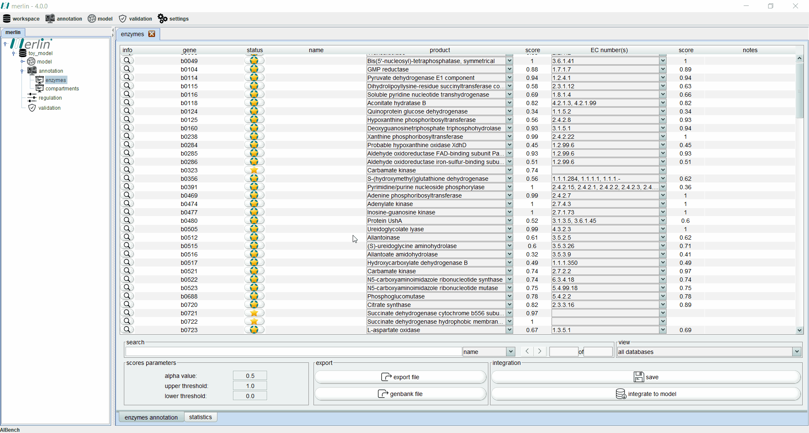
×

SamPler
SamPler is a semi-automatic method for annotation of enzymes. When merlin’s homology search is complete, a score is assigned to each EC number by weighting the taxonomy score, frequency score and a parameter α. However, the best value for the parameter α is not automatically discovered and has to be calculated manually or using SamPler. To determine the best value of α, the user has to manually annotate a small sample of the genome (5% to 10%), allowing merlin to accept this sample as its standard of truth.SamPler is available as a plugin at “annotation/enzymes”. When this button is pressed, merlin will launch a warning saying that all previous enzymes annotation will be deleted. At this point, the only options are to cancel the execution or continue. Note also that this tool can only be executed if the BLAST already processed all entries. If the operation was continued, merlin will open a graphical interface containing the sample to annotate. If required, a new sample can be generated using a different size. By pressing the button “save”, the current state of the annotation is saved and it can be continued in a different session. Thus, next time that SamPler is executed, the work already performed is loaded to the graphical interface. During the annotation process, the tool provides a list of EC numbers that can be related to each gene. If the correct option is not available in the list, one should select the option “other ec number”. Likewise, if a gene is not metabolic, the empty option should be selected.
When the annotation of the sample is complete, the button “find best parameters” should be pressed. Here, SamPler starts a wide set of calculations that allow determining the best value of α, upper threshold, and lower threshold. When all calculations are complete, a results graphical interface containing a table is launched. This table allows analyzing the results attained for each α, namely of the accuracy, upper and lower thresholds, the number of genes above the upper threshold, number of genes below the lower threshold, total of genes for manual curation, the percentage of genes for manual curation and the values the ratio. This window also allows to increase or decrease the values of the precision and negative predictive value.
The algorithm automatically selects which are the best parameters using the ratio as reference, the higher the ratio, the better the parameters. It is also possible to choose a different option and select other parameters based on the analysis of the results. By pressing the button “apply", the selected parameters are applied to the main window. Then, at the Enzymes Annotation board main tab, all entries above the upper threshold are accepted as correctly annotated, and below the lower threshold all entries are rejected as non-metabolic genes. All genes between the upper and lower thresholds must then be manually curated. SamPler is published and can be checked in detail here.
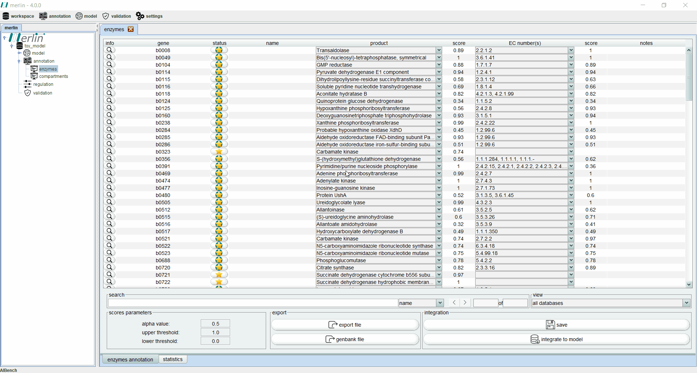
×

Enzymes annotation
Enzymes board
The enzymes board shows, to the user, data related to the organism’s genome functional annotation. Its main tab presents all genes, as well as the associated status, name, product, EC number, scores and notes for each one. The status of a gene is divided in two components, the ‘star’, which reflects the gene revision status (Gold - Reviewed; Silver- Unreviewed), and the ‘background’, which reflects if merlin’s annotation is in accordance with UniProt annotation (Green - Annotations in accordance; Light Green - Partial accordance, often happens with promiscuous enzymes; Red - Annotations not in accordance). Additionally, each gene is assigned with a product and EC number based on score calculated by a merlin’s internal algorithm that takes into account both hits frequency and source organism taxonomy. However, products and EC numbers can be manually changed by the user, using the dropdown boxes available in each column. The enzyme board also contains a ‘notes’ column that allows the user to write anything it pretends (Recommendation: the user should take note of any modification made to a gene, as backtracking changes in the model might be necessary). Additional information for each gene can be accessed using the magnifying glass, showing a panel with changeable tabs that can present all hits obtained in the BLAST, protein sequence, BLAST parameters or organism taxonomy.The search toolbar can be a valuable tool for the user, as it can search by gene name, by notes or in all columns. Setting the search toolbar with ‘all’ allows the user to search for EC numbers in all gene annotations, which can be useful in the later stages of the GSM model reconstruction. The main tab of the enzyme board can also be set to show only results from a selected database. Annotations shown in the board can be exported to an XLSX file or can be used to update the GenBank file of the organism’s genome. Finally, the two ‘buttons’ in the bottom right section of the board are used to save changes made in the board and to integrate the annotations to the model. The board also displays a second tab that shows statistical information, such as the number of genes, number of genes without similarities, average number of homologues per gene, among others.
×

Enzymes annotation integration
merlin easily allows you to integrate the enzymes functional annotation into a draft genome-scale metabolic network. The result of the integration between the loaded metabolic data and the loaded or carried out enzymes functional annotation will define the topology and connectivity of your genome-scale metabolic network. The metabolic capabilities encoded in the genome previously identified with EC numbers will now be associated to reactions according to the mappings between enzymes (EC numbers) and reactions available in the metabolic data previously loaded into merlin. The following example elucidates what is happening behind the scenes: A given gene has been annotated with the pyruvate formate-lyase EC number (2.3.1.54) in the enzymes annotation step; KEGG metabolic data has been loaded in merlin (see Metabolic data section); When this annotation is integrated into the model dashboard, the following metabolic reactions "R00212" and "R06987" are automatically associated with the referred enzyme and assumed to be present in your genome-scale metabolic model according to the enzymes functional annotation. merlin will perform this operation for all metabolic capabilities (genes assigned with at least one EC number) annotated in the enzymes functional annotation step and according to the loaded metabolic data.In the Enzymes board, one can perform the integration of the enzymes functional annotation in the model dashboard using the Integrate to model button. This button will directly integrate the results of the enzymes annotation into the model dashboard and fill up the database tables assigned for this module. Note that every time the "Integrate to model" button is used the results of the previous integration are lost. This operation saves the new results of the integration on top of the previous ones. Thus, although this button can be used to update the previous integration results, all alterations performed in the model dashboard and database tables designed for this module will be lost. The Integrate to model button does not perform the Save operation described in the Enzymes board section. In other words, the enzymes functional annotation can only be saved in the database tables assigned for this purpose using the Save button in the Enzymes board.
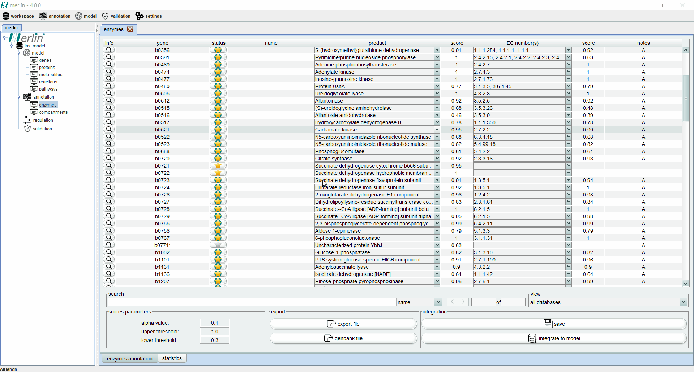
×

Transporters annotation
merlin easily allows you to perform and integrate the transporters’ annotation into a draft genome-scale metabolic network using the state-of-the-art tool called TranSyT. The Transport Systems Tracker (TranSyT) is a new approach to the problem of identifying genome-wide transmembrane transport systems, annotating these with reactions. TranSyT is the next iteration of TRIAGE (available in merlin v3), though more efficient and designed to overcome its limitations. This new approach still relies on the TCDB to perform the annotation of transporters systems; however, TranSyT automatically retrieves and processes information from this source.Run TranSyT
TranSyT is available as a plugin in merlin. By executing this operation, merlin will submit a request to TranSyT’s webserver, in order to generate transport reactions for the organism in study. When the results are retrieved, merlin will automatically integrate those reactions in the model and, if the compartmentalization of the model was already processed, assign compartments to the transport reactions. This operation contains some “advanced options” that one can set in order take effect in already compartmentalized models. The fields internal/external/membrane compartment are set as “auto” by default. This means that merlin will try to find the compartments that better suit this localizations. However, if none is found, default compartments will be created for the ones missing. Otherwise, the user can type the name of the compartment to assign to each category, and if these compartments are present in the model, the operation proceeds. When the process is complete, all reactions generated can be found in the model’s reaction board main tab at “Transporters pathway”.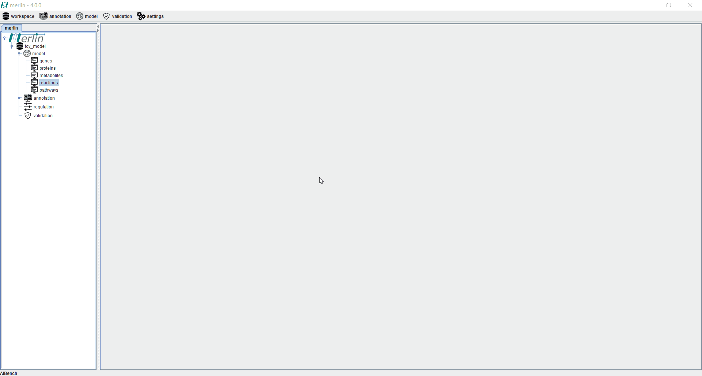
×

Clean transport reactions
Cleaning transport reactions generated by TranSyT can be performed by selecting the operation available at: model - remove - transport reactions. This action will remove all TranSyT’s reactions from the model., which will no longer be available at the reactions board.Compartments annotation
merlin easily allows you to perform and integrate the compartments’ annotation into a draft genome-scale metabolic network using the results of Psortb3, WoLFPSORT and LocTree3. To load the reports generated by the aforementioned tools, one must access the “annotation” section, hover over the “compartments” option and choose the “load reports” option. A panel will pop up asking for the respective workspace for the compartment report to be integrated into, and the tool used to generate the report. After clicking “proceed”, it is necessary to enter the URL with the compartment prediction report generated by the aforementioned tools available at the following platforms:- LocTree3
- WoLFPSORT
- Psortb3 - It is worth noting that if a user wishes to integrate a report generated by Psortb3, besides the URL with the results it is also possible to submit a local file with the results’ output format as “Long Format (tab delimited)”
×

Compartments board
After uploading the reports of either one of the compartments predictors supported by merlin, all predictions should be in this board. Here, results like primary compartment predicted, secondary compartments predicted and respective scores are available. The field “secondary compartments”, containing a drop down box with several different values and set as 0.1 by default, allows the visualization of the secondary compartments with a score difference of less than the selected value. The compartments shown in this table are the ones that will be considered for integration into the model.Compartments integration
In the bottom right corner of the compartments annotation board main tab, it is possible to find the button “integrate to model”. This allows to assign compartments to the reactions in the model. This step is accomplished by checking the enzymes encoded by each gene and the reactions catalyzed by such enzymes. Thus, the reactions associated with such enzymes, will be assigned with the compartments annotated for the encoding genes in the compartments annotation board. By pressing this button, a new graphical interface opens. This window contains a table with all compartments predicted to be related with the genes submitted for prediction and an optional feature that lets the user to assign the default compartment membrane. In this table, the user can select which compartments should be ignored by the compartmentalization operation. This feature is useful in cases where some of the compartments predicted do not make sense in the organism in study. For instance, for cases in which the predicted compartment is “unknown”, or even “periplasm” for a gram-positive organism.Regarding the option to set a default membrane (default membrane when compartmentalizing transport reactions), merlin allows the user to set this property manually or use “auto” mode. In “auto” mode, merlin will automatically try to search for the compartment related with the plasma membrane. If no compartment is found, merlin will launch a warning saying that its search was unsuccessful, and will automatically create a default compartment named “plasma membrane”. When the integration process is complete, the reactions at the model reaction board main tab are expected to become compartmentalized. Note that the column “source” at the reactions board has now switched to “localization”.
×

Clean compartments integration
By selecting the button “clean integration” available in the annotation compartments board, all compartments assigned to the reactions in the model will be removed. This will cause the reactions shown in the model reactions board to become non-compartmentalized.Biomass formulation
merlin easily allows you to create a biomass reaction for the draft genome-scale metabolic network. The formulation of the biomass reaction is one of the most important steps in your reconstruction. This is also the first step towards the conversion of our genome-scale metabolic network into a model. The biomass reaction should account for all the macromolecules that make up the biomass of the organism of interest.| Template | Protein (g/gDW) | DNA (g/gDW) | RNA (g/gDW) | mRNA (g/gRNA) | tRNA (g/gRNA) | rRNA (g/gRNA) |
|---|---|---|---|---|---|---|
| Archaea | 0.61 | 0.034 | 0.227 | 0.05 | 0.15 | 0.80 |
| Cyanobacteria | 0.595 | 0.016 | 0.077 | 0.05 | 0.15 | 0.80 |
| Gram-positive | 0.588 | 0.016 | 0.077 | 0.05 | 0.15 | 0.80 |
| Gram-negative | 0.533 | 0.027 | 0.136 | 0.05 | 0.15 | 0.80 |
| Mold | 0.367 | 0.006 | 0.040 | 0.05 | 0.15 | 0.80 |
| Yeast | 0.420 | 0.026 | 0.066 | 0.05 | 0.15 | 0.80 |
merlin provides you with the e-biomass equation tool. This tool allows you to create the biomass reaction automatically including DNA, RNA, Protein, Lipid and Carbohydrate macromolecules as well as the group of cofactors. These metabolites will be denoted as electronic metabolites, namely e-Metabolites. The contents of each e-metabolite in the biomass reaction will be taken from the selected template. Alternatively, these contents can be manually assigned by you. The table below shows the biomass templates available in merlin and the respective contents for each macromolecule.
Besides the biomass reaction, the e-biomass equation tool will create a reaction for each main macromolecule (DNA, RNA and Protein) and group of molecules (Cofactors) that makes up the biomass of the organism of interest. According to the reaction, merlin can calculate the contents of each amino acid, deoxyribonucleotide or ribonucleotide from the genome sequence:
- Gene translated amino acid sequences, i.e genome protein fasta file (.faa), for the protein assembly
- mRNA, i.e. genomic coding sequences fasta file (.fna) as well as tRNA and rRNA, i.e. RNA sequences fasta file (.fna), sequences for the RNA assembly
- Gene nucleotide sequences, i.e. genome sequence fasta file (.fna), for the DNA assembly
Additionally, gene expression data can be used to adjust the amino acids contents. All cofactors in the e-Cofactor reaction are assigned with the same content. Note that, all contents and reactions can be altered manually in the Reactions board (see Model curation section). Furthermore, new reactions can be created for the assembly of other macromolecules in the Reactions board. For instance, the growth-associated energy requirements characterized by the number of ATP molecules required for synthesizing one gram of biomass can be added to the biomass as the hydrolysis of the energy currency of life.
Creating the biomass equation
To set the contents of each macromolecule manually go to the settings sub-menu called tools configurations and click on e-biomass contents. This will determine the fraction of each macromolecule in the biomass reaction. Alternatively, you can select in the next steps one of the biomass templates available in merlin. To create the biomass equation go to the e-biomass equation tool in the model sub-menu called create. If you want to use the manually set contents select the custom template, otherwise select the most adequate template to the organism of interest.
×

Calculating protein, DNA and RNA contents
merlin can calculate automatically the contents of each amino acid, deoxyribonucleotide and ribonucleotide into the protein, DNA and RNA reactions, respectively. For that, you must have loaded or downloaded all genome files, namely protein fasta file (.faa), genomic coding sequences fasta file (.fna), RNA sequences fasta file (.fna) and genome sequence fasta file (.fna). See Genome files section for more detail. Leave the calculate protein, DNA and RNA checkboxes ticked for merlin determining these contents automatically.Other settings
The e-biomass equation tool allows you to select the source of the metabolic data used to determine the contents of each amino acid, deoxyribonucleotide and ribonucleotide. Currently, we have support for KEGG and ModelSEED metabolic data. A biomass compartment can be created specifically for the biomass reactions in the biomass compartment field. Otherwise, leave this field as default for assigning the biomass reactions to the cytoplasmic compartment. In the advanced options, the user can use gene expression data to adjust each amino acid content in the protein reaction by providing the file path and data separator.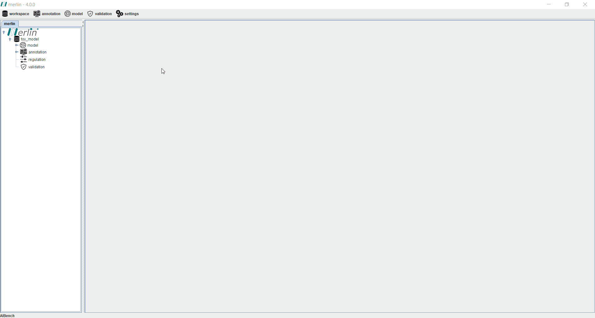
×

Results
The results of the e-biomass equation tool will be displayed in a specific pathway called Biomass pathway in the Reactions board (see Model curation section).Creating drains/exchange reactions
Exchange reactions or drains are a set of reactions necessary to replicate environmental conditions in which organisms survive and grow, as these can control the metabolite uptake and excretion. merlin provides a tool that automatically creates an exchange reaction for each metabolite in a given compartment. The user may manually insert the compartment for drain creation, if intended, or leave merlin’s default compartment, which is defined as ‘auto’. If the latter is chosen, the software will automatically search for an ‘extracellular’ or ‘outside’ compartment in the model and generate drain reactions for all metabolites in the compartment. All drains generated by merlin are grouped into a pathway named ‘Drains Pathway’. Additionally, these reactions contain a single compound as a reactant, no products and its lower and upper bounds are set at a value of 0 and 999999 (default), respectively. These restrictions limit the input and output fluxes of a metabolite and should be constrained according to the environmental condition. For instance, to represent a metabolite available in the media, the lower bound of its drain should be restrained to a negative value. Fluxes determined in experiments may be used to constrain these reactions as well.
×

Clean the drains/exchange reactions
As GSM model reconstruction is an iterative process, metabolites available in the model may change throughout the reconstruction. Therefore, merlin provides a tool which allows the user to automatically clean all the drain reactions previously generated by the drain reactions tool.Creating Gene-Protein-Reaction associations
The gene-protein-rules are generated using boolean logic in order to assemble GPR relationships of different complexities. merlin easily allows the user to create GPR associations for the draft genome-scale metabolic network using KEGG Orthology data. For each reaction in the model associated with one or more enzymes the algorithm looks for the KEGG orthologous associated with each enzyme. The genes associated with each ortholog are evaluated and a BLAST search against the whole genome is performed with previously defined similarity thresholds . The BLAST similarity thresholds for both reference organism and other organism can be defined in the method ”GPR rules” inside “tools configuration” in the section “settings”. These values allow the algorithm to select the genes that should be selected after the BLAST results have been generated.The enzymes are connected to their orthologs through one or more modules which have a specific definition, comprising different orthologs, depending on the reaction they are associated with. The definition is used to built the boolean rules by using the BLAST evaluation to accept or reject a definition. For example, if in a definition such as “(GeneA OR GeneB)” one of the genes is not selected in the BLAST evaluation procedure the definition is ignored. On the other hand if both genes are accepted the definition is accepted and can be used as one of the boolean rules for a reaction. The user has the capacity to change these boolean rules in the “edit” button on the reactions view and apply the changes to the model.
×

Change the GPR rules settings
merlin allows you to choose many standards, such as “reference organism similarity threshold”, in order to create GPR associations. To assign different values to the thresholds you can access the GPR rules settings in “tools configuration” in section “settings”.Model curation
merlin has been designed to foster the curation of draft genome-scale metabolic networks. For that, merlin provides diverse tools allowing you to curate your model in a semi-automated fashion.Genes
The “genes” board main tab lists all genes including its locus tags, names, number of encoding subunits, number of encoded proteins and number of associated reactions. If one seeks further information regarding a given gene it is possible to click on the magnifying glass associated with an entry to access synonyms, orthologs, encoded proteins, associated compartments and sequences (DNA and Protein). Furthermore, this board contains multiple filters and operations below the gene table. The “search” field eases gene filtering by name or locus tag, highlighting the matched gene (the arrows and indexes on the rightmost position allow cycling between multiple matches). In addition, it is possible to filter genes shown in the board by encoding genes only. The “insert” option triggers a new panel which allows users to create a new gene entry, while the “edit” option triggers an operation to modify pre existing genes. The “remove” option removes a given gene both from the board and from the database. The “export file” option triggers an operation to export listed data for each gene in the board in XLSX format. Similarly to other boards, the “genes” board has a statistics tab summarizing essential data, such as the total number of genes, number of protein encoding genes and number of enzyme encoding genes.
×

Proteins
The “proteins” board main tab lists all proteins including, names, identifiers, number of involved reactions and number of encoding genes. By clicking on the magnifying glass associated with a given protein, it is possible to visualize additional information such as the encoded reactions of the protein, encoded genes, Gene-Protein-Reaction rules (if available), associated pathways, protein synonyms and associated compartments. The search field allows users to filter data by protein name or identifier. The “insert” and “edit” operations are responsible for creating new proteins and editing pre existing proteins respectively. The “remove” operation removes a chosen protein both from the board and the database. In addition, It is possible to filter shown proteins by “in model” proteins, which are proteins integrated in the model. Moreover, this board contains an additional statistics tab describing data, such as the number of proteins, number of enzymes and number of transporter proteins in the database.
×

Metabolites
The “metabolites” board main tab lists all metabolites including names, associated compartments, formulae, external identifiers, number of associated biochemical and transport reactions in the model. By clicking on the magnifying glass associated with a given metabolite, it is possible to visualize additional information such as involved reactions, metabolite synonyms and entry types. The search field allows users to filter metabolites by name, formula and external identifier. The “insert”, “edit” and “remove” operations are responsible for creating new metabolites, editing pre existing ones, and removing a chosen metabolite respectively. Additionally, it is possible to filter the “metabolites” board by reactants, highlighting the respective entries in green, and by products, highlighting the respective entries in blue. All other entries are simultaneously reactants and products. As the “proteins” board , it is possible to filter the “metabolites” board by metabolites integrated in the model. Finally, it is possible to filter metabolite entries by type, including glycans, drugs and compounds. This board contains an additional statistics tab describing data, such as the number of reactants, number of products, number of reactants which are both reactants and products and number number of associated reactions.
×

Reactions
The “reactions” board main tab lists all reactions including the equations, reaction identifiers, associated pathways and sources. The “source” column is an important feature identifying manually created/edited reactions as “MANUAL”, reactions obtained from homology BLAST search results as “HOMOLOGY” and unprocessed reactions retrieved from KEGG as “KEGG”. Additionally, each reaction is identified as reversible (based on upper and lower flux bounds) and as integrated in the model or not. The magnifying glass next to each reaction triggers the appearance of a panel with additional data such the metabolites involved in the reaction, associated enzymes, reaction properties and synonyms, associated pathways and source.The search field allows users to filter reactions by reaction identifier and equation. Additionally, it is possible to filter the set of shown reactions by associated pathway. Furthermore, after choosing a specific pathway, by clicking in the “draw in browser” option it is possible to access an external page from KEGG with a visual representation of the pathway as represented in merlin. The “insert”, “edit” and “remove” operations are responsible for creating new reactions, modifying pre existing reactions, and removing a chosen reaction respectively. The “find gene” button triggers an operation to find an orthologous gene for a given reaction. The “duplicate” button creates a copy of a chosen reaction, with the only change being the incremented reaction identifier (to distinguish copies from the original reaction).
The pathway subsection contains the “new” and “remove” buttons which trigger operations to create a new pathway or remove a pre existing one. All reactions listed in the “reactions” board are color coded by pathway, thus every reaction belonging to the same pathway has the same color. The “colors” button automatically refreshes the color palette of the “reactions” board , which might increase text legibility. The “export file” button generates a XLSX file with all reactions data, which can be further filtered by pathway. Finally, it is possible to filter the “reactions” board to list only the reactions which are integrated in the model. This board contains an additional statistics tab describing data, such as the number of reactions in the model filtered by source and number of reversible and irreversible reactions.

×

Pathways
The “pathways” board main tab lists all pathways including its name, number of associated reactions and enzymes and external KEGG identifier. The magnifying glass next to each pathway triggers the appearance of a panel listing all reactions and enzymes associated to a given pathway. The search field allows users to filter pathways by name or external KEGG identifier. The “export file” button generates a XLSX file with all pathway data. The statistics tab of the “pathways” board displays the number of pathways with no SBML file associated.
×

Tools
Correct reversibility
Incorrect reversibility and directionality of reactions in a GSM model can lead to futile cycles, which impairs model’s predictions. Additionally, all reactions retrieved from KEGG display a reversible status, thus its correction is mandatory. merlin offers a tool which corrects reactions (loaded in the database) directionality and reversibility using Zeng or ModelSEED databases as a source of corrections. This tool also contains a user selected parameter referent to the template organism ‘class’ and a force correction option that should be checked so reactions are automatically corrected.
×

Find unbalanced reactions
Unbalanced reactions in GSM models can lead to incorrect flux distributions during simulations. Hence, reactions’ stoichiometry has to be ensured, by guaranteeing that the atoms’ sum in reactions’ participating compounds is equal on both sides of the reaction equation. As in previous cases, merlin contains a tool that identifies unbalanced reactions. This operation requires a ‘proton name’ input (default: H+), which can be defined by the user. In order to easily pinpoint unbalanced reactions, the tool sets the unbalanced reactions’ names in bold and italic. Additionally, for each reaction in the model, a new tab, named ‘balance’, becomes available in the dropdown box of the reaction data panel, accessed by using the ‘magnifying glass’. Unbalanced reactions can also be exported in an XLSX file. The typical unbalanced reaction issues found within a metabolic network include:- Metabolite missing formulae
- Missing/excess protons or water
- Macromolecule synthesis/breakdown
×

Find blocked reactions
In some occasions, intervenients of reactions are neither consumed or produced by other reactions, which results in a ‘blocked’ reaction. In these situations, flux through the reaction during simulations is impaired, and, in some cases, could affect the model’s performance. Usually, blocked reactions are a result of errors in the enzyme annotation or compartmentalization of the model. In order to aid the analysis of unconnected reactions, merlin has an operation that aims at identifying these reactions, coloring them in red (blocked reaction) or light blue (leads to a block reaction). Additionally, in the reaction data panel, a new tab becomes available, stating which metabolites of the reaction are considered dead-end metabolites (metabolite that cannot be consumed or produced). Therefore, the ‘find blocked reactions’ tool is a valuable asset to curate the GSM model, as it can help in the identification of metabolic gaps (missing reactions in a given pathway), correction of enzyme annotations and incorrect directionality/reversibility of reactions.
×

Remove blocked reactions
Usually, the majority of unconnected reactions are unnecessary for a GSM model. Therefore, merlin offers the possibility to remove automatically all the detected blocked reactions using the ‘remove blocked reactions’ operation. However, before using said tool, it is mandatory to identify the blocked reactions firstly, or else the operation launches a warning.Find gene
Ideally, all metabolic reactions in the model should be associated to a gene. "Find Gene" is a tool that identifies gene or genes for a reaction. If an enzyme is associated to a reaction this tool is able to look for orthologs for the gene associated with the enzyme. Based on BLAST similarity thresholds, very similar process occurs on “Create GPR” tool, the tool will filter all the orthologs found and will select only the ones that match the thresholds. The tool will present to the user a panel with the orthologs found together with information from the BLAST performed for each ortholog. Then the user can choose which genes should be added to the model.
×

BioISO
BioISO is aimed at evaluating your biomass formulation or genome-scale metabolic network. This tool is based on the Constraints-Based Reconstruction and Analysis (COBRA) and Flux Balance Analysis (FBA) frameworks. BioISO can receive as input the current genome-scale metabolic model and return potential errors in the biomass formulation or gaps in the metabolic network.Run BioISO
To run BioISO, go to the validation menu and select a reaction to be tested and the objective direction (maximize or minimize the reaction). All reactions available in the model will be displayed in the dropdown box. Leave the URL field as default. It is expected BioISO to take a few minutes (2-5 minutes) depending on the model size, submitted reaction and server availability.BioISO results
The results will be available under the validation dashboard on the left. One can open the results board identified by the submitted reaction. The results will be displayed in a tabular format by clicking on the corresponding board. The precursors (reactants) and products of the submitted reaction are displayed together with the analysis, number of associated reactions and role of the metabolite in the submitted reaction. The evaluation performed by BioISO for each metabolite is based on the analysis of the metabolic network capability to synthesize or consume that given metabolite, depending on the role. Then, you can take a look at the reactions associated with each metabolite by opening a new panel on the magnifying glass. In this panel, the evaluation result depends on whether the reaction can carry any flux towards the consumption or synthesis of the previous metabolite, depending on the role. The number of reactants and products is also available in this panel. To get more details about a given reaction, one can open a new panel by clicking on the associated magnifying glass. This panel will display BioISO’s analysis over the metabolites involved in that specific reaction. Finally, you can repeat the last two operations to get more detail over that metabolites and reactions.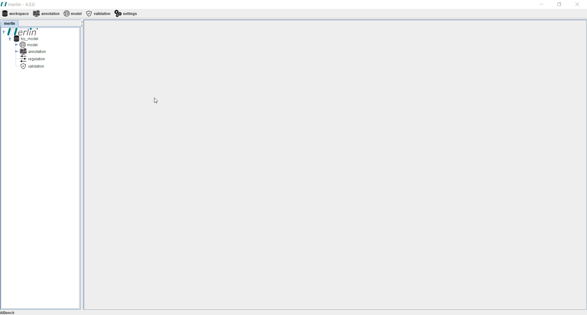
×

A pipeline for performing manual curation with BioISO
merlin easily allows you to curate your metabolic model. For that, we suggest a straightforward pipeline using BioISO. Once the user has assembled the draft genome-scale metabolic network, performed the reversibility correction, and found both unbalanced and blocked reactions, we suggest the utilization of the BioISO tool to hastening the model curation and debugging. To run BioISO one must provide a reaction that will be interpreted as the objective. For instance, the main objective of microorganisms living in wild-type environmental conditions is to grow namely maximizing the biomass production. Following this principle, the first reaction to ever be submitted to BioISO can be the biomass reaction. BioISO will evaluate whether the current model is capable or not to synthesize or consume the metabolites associated with this reaction. If such turns out to be the case, this means that the current model is correctly assembled and thus attaining the biomass production.In addition to this preliminary analysis, BioISO will conduct its analysis to the reactions associated to these metabolites and so on. In this way, one can solve potential errors in the draft genome-scale metabolic model by focusing specifically in modules that cannot carry any flux towards the submitted objective. Note that such modules are just a given set of metabolites and reactions that are not correctly assembled and thus the current model is not capable of succeeding in that objective. The manual curation process is therefore leveraged with this pipeline, as you can submit all reactions as objectives. If one is interested in evaluating whether a given pathway can synthesize or consume a given metabolite, the corresponding reaction can be submitted for analysis. Then, you would have to take care of the faulty modules (reactions or metabolites), according to BioISO results. Finally, you should find all potential errors in the model, correct them and run BioISO for the same objective to see if the changes had an effect on the model.
Exporting a model
merlin easily allows a user to export a given model in SBML level 2 or 3, a format based on XML used to represent computational models of biological phenomena. To export a model one must access the “workspace” section, hover over the “export” option and choose the “model” option. A new panel will pop up asking for the workspace which contains the model to be exported. Additionally, it is possible to export a text file containing the formulae of model metabolites by selecting the “Generate Formulae” option. After choosing the output directory and name, it is possible to export the model in SBML format.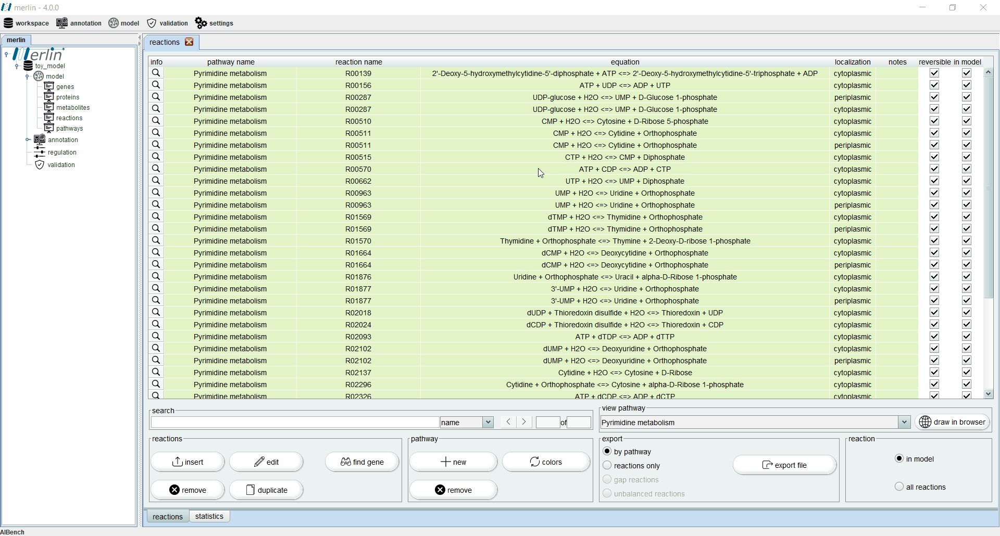
×

Importing a model
It is possible to import a pre existing model to merlin as long as it is available in SBML level 2 or 3 format. To perform this operation one must access the “workspace” section, hover over the “import” option and choose the “model” option. A new panel will pop up asking to select the workspace which will host the model to be loaded. After choosing the correct SBML level of the model, a user only needs to choose the actual model file.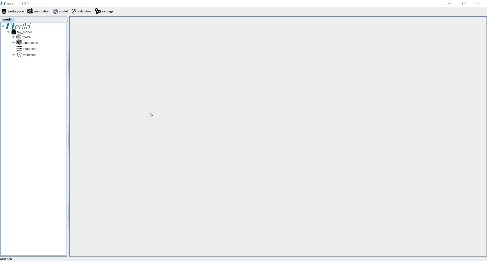
×

Plugins manager
Updating plugins
When merlin is executed, it will automatically search for updates in the plugins installed, and if any updates are found, a pop-up is launched asking to install the updates. If the updates are installed, merlin will need to restart in order for the changes to take effect. To search for updates manually, an operation is available in the menu on the “settings” option.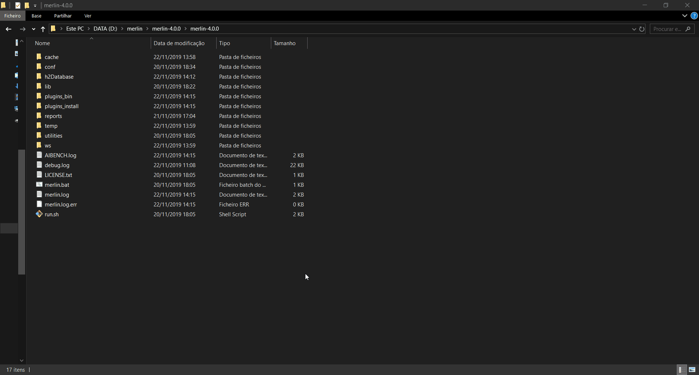
×

Installing new plugins
The operation “repository manager” allows the user to enable, disable and/or install new plugins into merlin. The upper table inside the manager graphical interface allows to verify the plugins that are already installed in merlin as well as other information, and a checkbox to enable or disable each plugin. The lower table contains the plugins that are available in the online repository. To require the installation of a plugin, the button “Install - (...)” regarding the chosen plugin must be pressed inside in the column “Download”. Any modification regarding the plugins in this board requires restarting merlin in order to take effect.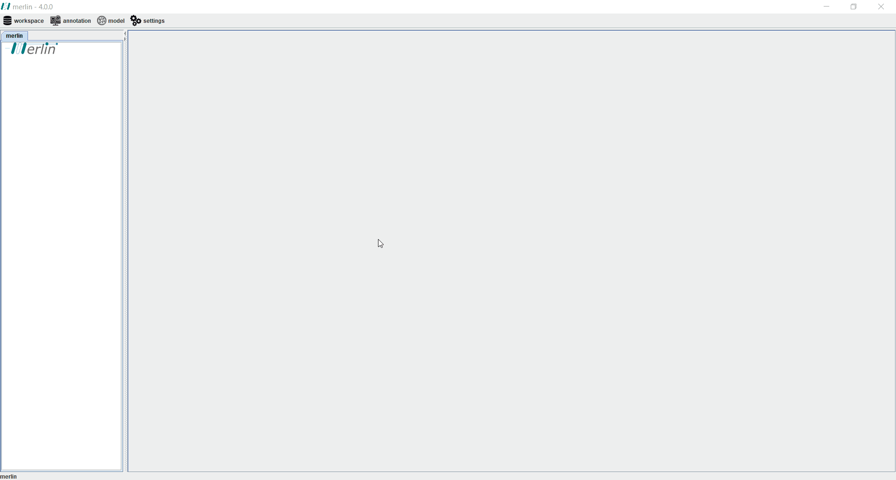
×